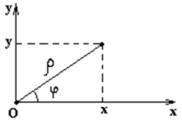

24.1.5. Связь полярных
координат с декартовыми
Совместим начало декартовой системы с полюсом полярной
системы координат, а ось  с полярной осью
с полярной осью . Найдём связь координат точки
. Найдём связь координат точки  и .
Она выражается следующей системой уравнений:
и .
Она выражается следующей системой уравнений:
с полярной осью. Найдём связь координат точки и .
Она выражается следующей системой уравнений:
Формулы связи
полярных координат с декартовыми координатами
